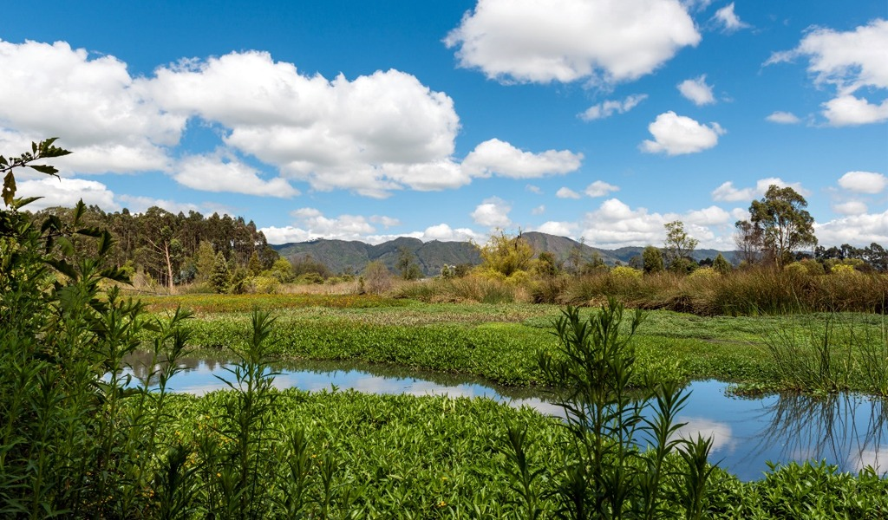
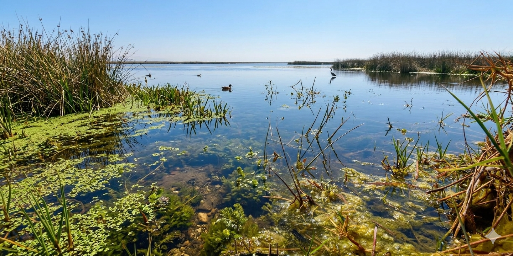

Un ecosistema en riesgo
Bienvenido a este espacio dedicado a los humedales de Bogotá, un proyecto desarrollado en conjunto con el propósito de informar, reflexionar y generar conciencia sobre la importancia de estos ecosistemas. Aquí encontrarás información clara y visual sobre su valor ambiental, los desafíos que enfrentan y el papel que todos podemos cumplir en su cuidado. Este trabajo no solo busca mostrar datos, sino también invitarte a comprender por qué los humedales son esenciales para la vida en la ciudad. Te invitamos a explorar, aprender y formar parte del cambio hacia una mayor protección y respeto por nuestro entorno natural.

INTRODUCCIÓN
Los humedales de Bogotá son ecosistemas naturales fundamentales para el equilibrio ambiental de la ciudad. Permiten la conservación de la biodiversidad, ayudan a regular el agua y contribuyen a la mitigación del cambio climático. Sin embargo, el crecimiento urbano y la contaminación los han puesto en riesgo.
IMPORTANCIA DE LOS HUMEDALES
BIODIVERSIDAD
Albergan gran variedad de especies de aves, plantas y animales.
REGULACIÓN DEL AGUA
Evitan inundaciones y mantienen el equilibrio hídrico.
CAMBIO CLIMÁTICO
Ayudan a reducir los efectos del cambio climático.
PROBLEMAS AMBIENTALES
La contaminación es uno de los principales problemas de los humedales en Bogotá. La acumulación de basura y vertimientos de aguas residuales afectan gravemente la calidad del agua y ponen en riesgo la vida de muchas especies.

Desliza para ver el impacto ambiental
ORGANIZACIONES QUE PROTEGEN LOS HUMEDALES
DATOS Y ANÁLISIS
Protección legal
En Colombia, las personas que defienden el medio ambiente cuentan con un reconocimiento jurídico especial, ya que su labor es fundamental para la protección de ecosistemas como los humedales. A través del Acuerdo de Escazú y decisiones de la Corte Constitucional, se establecen garantías para proteger su vida, seguridad y participación. Sin embargo, en muchos casos estas medidas no se aplican de manera efectiva.
Problemas actuales
Actualmente, quienes protegen el ambiente enfrentan múltiples riesgos como amenazas, falta de garantías de seguridad y dificultades para acceder a la justicia. Esta situación limita su capacidad de acción y debilita la defensa de los ecosistemas. Además, la falta de reconocimiento institucional hace que su labor muchas veces no sea valorada ni respaldada.
Fallas de gestión
Aunque existen normas y entidades encargadas de proteger el medio ambiente, en la práctica se evidencian fallas en su implementación. La vigilancia ambiental es limitada y las respuestas ante daños ecológicos suelen ser tardías, lo que permite que problemáticas como la contaminación y la expansión urbana sigan afectando a los humedales de Bogotá.